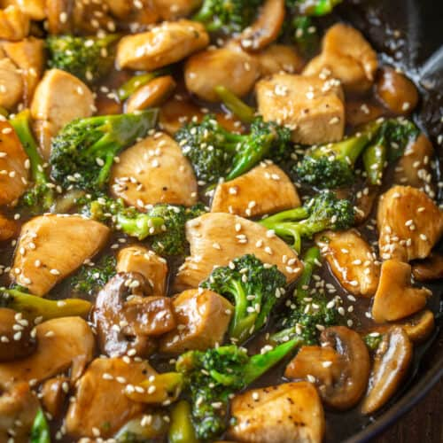

Odin Recipes
Chicken & Broccoli Recipe

Description
Chicken and Broccoli Stir Fry satisfies the craving for takeout and
you'll feel good about serving this to your family because it's
healthier than going out. If you loved our Beef and Broccoli, then you
will love this chicken stir fry. It's loaded with tender chicken,
mushrooms and fresh broccoli.
Ingredients
-
Chicken – we used boneless skinless chicken breast, but
chicken tenders or even thighs would be delicious here.
-
Stir Fry Veggies – We love the combination of broccoli,
onions, and mushrooms for an authentic Chicken Broccoli Stir fry. You
could sub the broccoli with snap peas or zucchini and sub onions with
julienned carrots.
-
Chicken Broth – this adds more flavor, but water can
easily be substituted.
-
Low Sodium Soy Sauce – Since different brands have
different amounts of salt, add soy sauce to taste. You can always add
more at the end, but you can’t take salt out of a dish. For gluten-free,
use Tamari sauce.
-
Sesame Oil – this one ingredient gives the sauce
authentic Chinese stir fry flavor. Do not skip it.
-
Ginger & Garlic – fresh is best for stir fry, but in a
pinch, you can substitute 1 tsp fresh garlic for 1/2 tsp garlic powder
and substitute 1 tsp fresh ginger for 1/8-1/4 tsp ground ginger.
-
Brown Sugar– we used 2 Tablespoons of packed light
brown sugar. You can substitute with 1 1/2 Tbsp to 2 Tbsp of liquid
sweetener like honey, or add it to taste.
-
Corn Starch – using cornstarch as a thickener helps
keep this gluten-free.